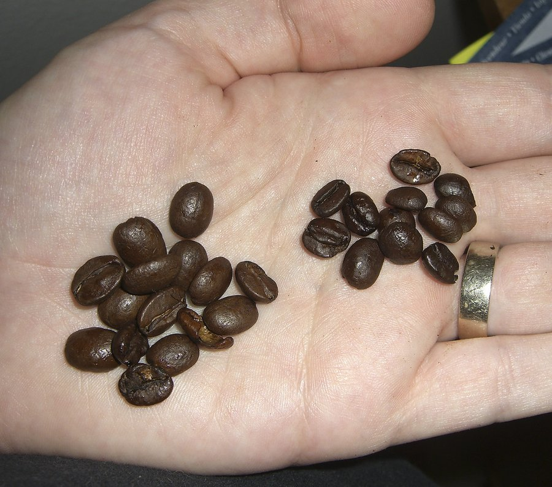

Memopezil vs Neuriva: Which Formula Has More Behind It?
Neuriva is the memory brand you can grab at the drugstore. Memopezil is the one you order online. They work on different ideas, and the research behind those ideas isn't equally deep.

Key takeaways
- Neuriva's core is two ingredients: whole coffee cherry extract, sold as Neurofactor, and phosphatidylserine at 100 mg. Some versions add B vitamins.
- Memopezil uses five: BCAAs 540 mg, bacopa 200 mg, rhodiola 100 mg, L-theanine 100 mg and panax ginseng 90 mg, all printed.
- The mechanisms differ. Neuriva leans on a BDNF story and cell membranes. Memopezil leans on bacopa for recall plus adaptogens for fatigue and calm.
- Evidence depth favors bacopa. Coffee cherry research is small and largely supplier-funded. Bacopa has many independent trials.
- Neuriva wins on convenience and simplicity. One capsule, any pharmacy. Memopezil is two capsules, online only, with a 60-day seller guarantee.
Memopezil vs Neuriva is a choice between a narrow two-ingredient formula and a broader five-ingredient one. Neuriva pairs coffee cherry extract with phosphatidylserine, a simple once-a-day pill sold everywhere. Memopezil adds bacopa, the memory herb with the deepest independent trial record, plus rhodiola and L-theanine. More is behind Memopezil's main ingredient; Neuriva is easier to buy.
Both brands sell themselves on the same promise: a sharper, steadier mind as you get older. Underneath, they're working on different theories. That's what this comparison is about. We're less interested in which ad is louder than in which mechanism has more research holding it up, and how much of that research is independent of the companies selling the ingredients.
If you want either product on its own, see our full Memopezil review and our Neuriva review and alternatives.

Memopezil: check today's price
Five ingredients with every dose printed: BCAAs, bacopa, rhodiola, L-theanine and panax ginseng. Two capsules a day, stimulant-free. Sold only on the official site, with a 60-day money-back guarantee.
See the official price →How do Memopezil and Neuriva compare at a glance?
| Memopezil | Neuriva (Original) | |
|---|---|---|
| Formula | BCAAs, bacopa monnieri, rhodiola rosea, L-theanine, panax ginseng | Whole coffee cherry extract (Neurofactor), phosphatidylserine |
| Disclosed doses | Yes: 540 / 200 / 100 / 100 / 90 mg | Yes: phosphatidylserine 100 mg; coffee cherry amount on the label, check the current one |
| Daily serving | 2 capsules | 1 capsule |
| Main mechanism | Memory consolidation (bacopa), fatigue and stress (rhodiola, ginseng), calm focus (theanine) | BDNF signaling (coffee cherry), nerve-cell membranes (phosphatidylserine) |
| Evidence depth | Bacopa: many independent trials; no trial on the finished formula | Coffee cherry: small, mostly short studies tied to the ingredient supplier; PS: older trials at triple the dose |
| Cost per day | About $1.63 to $2.63, depending on pack | Shelf price divided by capsules per bottle; varies by store |
| Guarantee | 60 days from the seller, official orders | Store return policy |
| Where sold | Official site only | Pharmacies, big-box stores, online retailers |
Memopezil prices are those published at the time of writing. Confirm the current figures on the official page.
What is in Neuriva, and how is it supposed to work?
Neuriva is a brain-health line from a large consumer-health company, and it's everywhere: TV, drugstore end caps, online ads. The range includes capsules, gummies and "Plus" versions that add vitamins B6, B12 and folate. This page compares against the core capsule.
Its first ingredient is whole coffee cherry extract, the fruit that surrounds the coffee bean. It's branded Neurofactor. The pitch is that compounds in the whole fruit raise brain-derived neurotrophic factor, or BDNF, a protein involved in keeping nerve cells healthy and forming new connections.
BDNF is a legitimate research target. The trouble is the size of the evidence linking this extract to it. The best-known studies were small, measured blood BDNF over hours rather than memory over months, and were connected to the company that supplies the ingredient. A rise in a blood marker isn't the same as a measurable change in recall.
Its second ingredient, phosphatidylserine, has a longer history. It's a fat that forms part of every cell membrane, concentrated in the brain. Studies from the 1990s found modest benefits in older adults with memory complaints. Two caveats apply. Many of those early studies used phosphatidylserine from cow brain, while modern supplements use soy or sunflower sources. And the trials typically used 100 mg three times a day. Neuriva's 100 mg once a day is a third of that. Our page on phosphatidylserine for memory covers this research in more detail.
To be fair, the FDA allows a qualified health claim for phosphatidylserine, worded to say the evidence is very limited and preliminary. That's not nothing. It also isn't a strong endorsement, and the agency's own wording says so.
What do buyers report? Our earlier Neuriva review found feedback genuinely mixed. Some people describe slightly steadier focus after a few weeks of daily use. Many who expected a clear memory change felt underwhelmed. That pattern fits a narrow formula with modest doses: not useless, not dramatic, and very dependent on taking it every single day.
What is in Memopezil, and how does it work differently?
Memopezil doesn't touch BDNF or membranes. It's built around three jobs. Bacopa, at 200 mg, is there for memory consolidation, the slow process of turning new information into stored memory. Rhodiola at 100 mg and ginseng at 90 mg target mental fatigue. L-theanine at 100 mg, the calming amino acid from tea, smooths attention without sedation. BCAAs at 540 mg round it out on a central-fatigue theory.
That spread has an upside and a downside. The upside is that it covers more of why people feel foggy: stress and tiredness, not only recall. The downside is that two of the five lines are underdosed. Ginseng is under half its usual studied amount and the BCAAs are a fraction of theirs. Bacopa itself is two-thirds of the standard 300 mg trial dose. We said so in our review and we'll say it here.
Does a two-ingredient label beat a five-ingredient one?
Not automatically. Short labels have a real advantage: fewer ingredients means more room in the capsule for each one, and less to cross-check against your medications. Long labels often fail the other way, with twenty names sharing a few hundred milligrams so that nothing reaches a useful dose.
Both of these products sit at the sensible end. Neither is a kitchen-sink formula and neither hides its amounts in a proprietary blend. So the better question isn't how many ingredients, but whether each one is close to the amount that was studied.
On that test they come out roughly even, in different places. Neuriva's phosphatidylserine is at a third of the classic dose. Memopezil's bacopa is at two-thirds of its standard dose, its theanine and rhodiola are in range, and its ginseng and BCAAs are well short. Neither label is fully dosed. Memopezil's best-dosed ingredients happen to be the ones with stronger independent research, which is why we give it the edge on evidence.
Which has stronger evidence: coffee cherry, phosphatidylserine or bacopa?
Ranked by depth of independent research, bacopa comes first. It's been through many randomized, placebo-controlled trials run by separate groups, and pooled analyses find a modest, fairly consistent improvement in delayed recall after about 12 weeks. You can read the detail in our bacopa monnieri evidence guide.
Phosphatidylserine comes second. There's a real body of work, but much of it is decades old, used a different source, and used three times Neuriva's daily amount. Coffee cherry extract comes third. The concept is interesting. The research is early.
Here's the part that applies to both products. Neither finished formula has independent trial data showing it improves memory. Ingredient evidence tells you whether an approach is plausible. It doesn't tell you a particular bottle will work for you.
Does Neuriva or Memopezil work faster?
Neither is built for speed, but they behave differently in the first weeks.
- Memopezil, days 1 to 14. L-theanine and rhodiola can bring a calmer, less scattered feel. That's attention and stress, not memory.
- Memopezil, weeks 8 to 12. This is where bacopa's trials report recall changes. Judge it here, not before.
- Neuriva, first weeks. Some reviewers describe slightly steadier focus building gradually. Mild and variable is the common report.
- Neuriva, months. Phosphatidylserine studies ran for months, so give it a full trial too.
If you want to measure rather than guess, take a short memory test before your first capsule and again at week eight. Write the scores down. Your impression of how forgetful you were two months ago is the very thing you're trying to measure, so it isn't a reliable witness.
Which costs less per day?
Neuriva is usually one capsule a day, and its price depends on the store, the version and whatever promotion is running. Divide the shelf price by the number of capsules in the bottle and you have your daily cost. The "Plus" versions generally cost more than the original.
Memopezil is two capsules a day, 60 per bottle, so one bottle lasts a month. At published pack prices that's about $2.63 a day on two bottles plus shipping, about $2.30 on three and about $1.63 on six, both shipped free in the US. It's a one-time charge with no auto-ship.
Cost alone shouldn't decide it. If one product's main ingredient is dosed for a three-month trial and the other's isn't, the cheaper bottle isn't the cheaper experiment. Pick the pack that covers at least 12 weeks if you go with Memopezil, because that's how long bacopa needs.
What are the side effects, and who should skip each?
Both are generally well tolerated. Neuriva's ingredients are mild, though phosphatidylserine can cause stomach upset or trouble sleeping in some people, and anyone on blood thinners should check with a doctor about it.
Memopezil's cautions are more specific because it has more active ingredients. Bacopa can cause digestive discomfort on an empty stomach, so take it with food. Rhodiola and ginseng can be activating, so take it in the morning. Speak to a physician before starting if you take blood thinners, diabetes or thyroid medication, antidepressants or sedatives, or if you're pregnant or breastfeeding. Our page on Memopezil side effects covers each one.
And for either brand: sudden or worsening memory problems call for a doctor's appointment, not a supplement. Neither product treats or prevents dementia.
Memopezil vs Neuriva: pros and cons
| Pros | Cons | |
|---|---|---|
| Memopezil | Bacopa anchor with the deepest independent research; theanine and rhodiola at studied amounts; every dose printed; stimulant-free; 60-day seller guarantee; no subscription | Ginseng and BCAAs underdosed; bacopa below trial standard; online only; two capsules daily; no trial on the formula |
| Neuriva | Very simple two-ingredient label; one capsule a day; sold almost everywhere; phosphatidylserine has an FDA qualified health claim | Phosphatidylserine at a third of the classic trial dose; coffee cherry research small and supplier-linked; refund depends on the store; no trial on the formula |
Who is each one really made for?
Neuriva fits a buyer who wants low friction. You're at the pharmacy anyway, you'd like something to try, and you don't want to compare milligrams or wait for a package. The one-a-day format and familiar brand make it an easy first step, and if it doesn't suit you, stopping is just as easy.
Memopezil fits a more deliberate buyer. You've read that bacopa has the strongest memory research of any herb, you're willing to wait three months for a fair answer, and you like that the seller stands behind a 60-day refund instead of a store's return desk. It also suits people whose fog is partly stress and afternoon fatigue, since rhodiola and theanine aim at that.
Neither fits someone looking for a quick fix or hoping to treat a diagnosis. And if you haven't looked at sleep, exercise and blood pressure yet, those will do more for memory than either capsule. Start there, then add a supplement if you still want one.
Which one should you pick?
Pick Neuriva if you want the simplest possible product, you'd rather buy it in a store today, and you're comfortable with a lighter evidence base. It's a real product with reasonable ingredients. It's just a narrow bet.
Pick Memopezil if you want the ingredient with the most independent memory research behind it, you also deal with stress or afternoon fatigue, and you're willing to take two capsules every morning for about three months. Know going in that two of its five ingredients are there more for the label than for the dose.
Our lean, for a buyer over 50 who'll run a proper trial: Memopezil has more behind it, mostly because of bacopa. To see how both sit in the wider field, check our best memory supplements of 2026.
Memopezil: check today's price
Five ingredients with every dose printed: BCAAs, bacopa, rhodiola, L-theanine and panax ginseng. Two capsules a day, stimulant-free. Sold only on the official site, with a 60-day money-back guarantee.
See the official price →Frequently asked questions
Does Neuriva contain caffeine like coffee?
Neuriva's coffee cherry extract comes from the fruit around the coffee bean, not from brewed coffee, and it's not marketed as a caffeine product. If you're sensitive to caffeine, check the current label and the brand's own statement. Memopezil is stimulant-free and contains no caffeine.
Can I take Memopezil with my morning coffee?
Yes, for most people. Memopezil has no caffeine, and its L-theanine is often studied alongside caffeine, where the pair tends to give a smoother kind of alertness. Take it in the morning with food so bacopa doesn't upset your stomach.
Is Neuriva Plus closer to Memopezil?
Not really. Neuriva Plus adds B vitamins to the same coffee cherry and phosphatidylserine base. It doesn't add bacopa, rhodiola or L-theanine. B vitamins mainly matter if you're low in them, which a simple blood test can show.
Can I take Neuriva and Memopezil together?
We wouldn't without talking to your doctor. There's no well-known interaction between the two, but stacking products makes it impossible to tell which is helping, adds cost, and Memopezil's ginseng and rhodiola already carry medication cautions. Choose one and give it a full trial.
Where can I buy Memopezil?
Only through its official site. It isn't sold on Amazon or in Walmart, CVS, Walgreens or GNC. Listings on marketplaces are resellers or counterfeits and aren't covered by the 60-day money-back guarantee.
Is phosphatidylserine better than bacopa for memory?
They're studied for overlapping things in different ways. Bacopa has more recent, independent randomized trials for delayed recall in healthy adults. Phosphatidylserine has older research, much of it at 300 mg a day and some from a cow-brain source no longer used. Neither is a cure for anything.
How long should I try either one?
About three months. Bacopa's trials measure results at 8 to 12 weeks, and phosphatidylserine studies also ran for months. Test yourself before you start and again around week eight so you're judging with a score, not a feeling.
Want the formula with bacopa at its core?
Memopezil prints every dose, contains no stimulants and carries a 60-day money-back guarantee on official orders. See the current pack prices.
See Memopezil's official price →Related: Memopezil review 2026 · Neuriva review and alternatives · Phosphatidylserine for memory · Bacopa monnieri benefits · Best memory supplements of 2026
Image: abdelazer / CC BY-SA 2.0